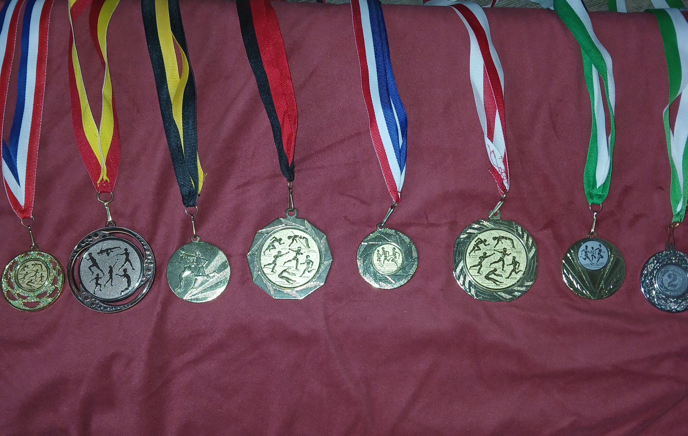

Welke sporten doe ik/deed ik
Ik begon echt met sporten toen ik rond 6 jaar oud was. Toen begon ik met atletiek, hierbij heb ik vele verschillende prijzen gewonnen bij werpen of sprinten/rennen. Uiteindelijk vond ik dit niet leuk genoeg, want ik moest heel veel verschillende onderdelen doen en dat vond ik te vervelend. Nadat ik van atletiek vanaf ben gegaan ging ik op freerunnen, want ik hoorde van een vriend dat freerunnen leuk is. Freerunnen is een sport waarbij je eigenlijk parcourt en dan met verschillende trucjes zoals een flip of een vault. Dit vond ik heel leuk en het ging harstieke goed totdat een hoop ouders gaven dat er niet genoeg veiligheid is, hierdoor is de freerun trainer er mee gestopt en moest ik opzoek naar een andere vereniging of sport. Toen kwam ik op het idee ik wil gaan voetballen. Dat vonden mijn ouders eindelijk oke en ging ik voetballen. Ik doe nu nogsteeds aan voetbal en vind het heel erg leuk.
Hier ziet u een foto van mijn medailles die ik heb gewonnen bij atletiek:
Welke sport zou ik een keer willen doen?
- Schermen
- Boulderen
- Atletiek (opnieuw)
- Elektrisch Gitaar
- Bowlen